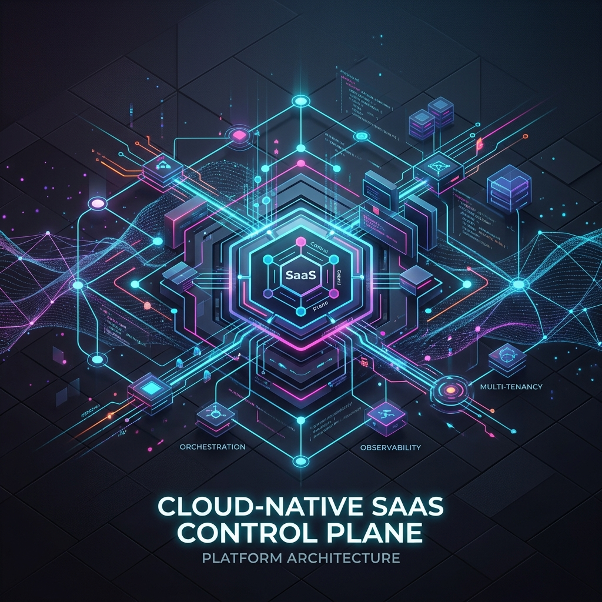
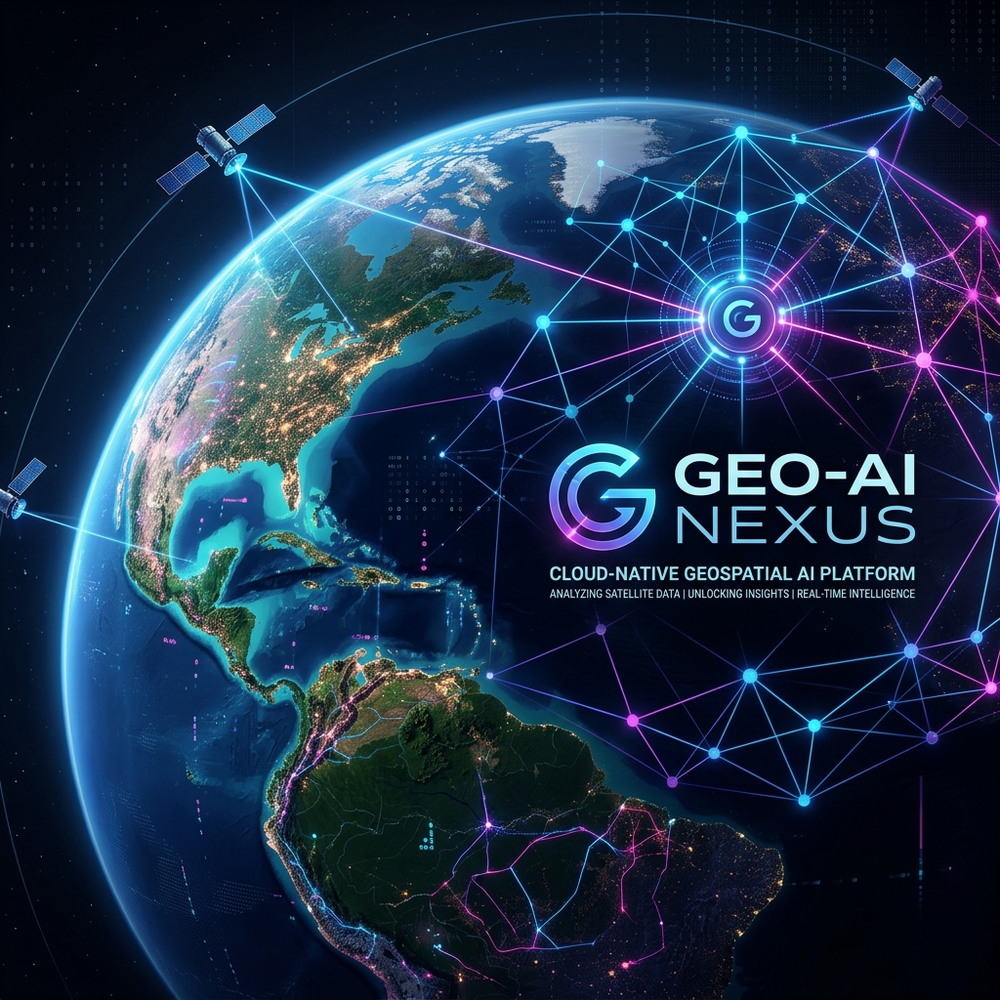

Large-Scale Migrations
Executed zero-loss migrations of 5M+ rows between MySQL and PostgreSQL 18 within tight maintenance windows.
Deep Learning & Geospatial AI Developer
I train deep learning models for satellite/drone imagery analysis (object detection, segmentation) and design high-performance async architectures (FastAPI, Django).
Large-Scale Migrations
Executed zero-loss migrations of 5M+ rows between MySQL and PostgreSQL 18 within tight maintenance windows.
Async Architectures
Rebuilt synchronous services into async-native FastAPI systems, eliminating DB bottlenecks and increasing throughput.
Mission-Critical AI
Deployed liveness detection and vector-search matching for biometric attendance serving thousands of daily users.
About
My focus is Python systems that solve operational problems at production scale. I work across Django, FastAPI, DRF, Celery, async deployments, vector search, telemetry storage, scraping pipelines, and enterprise integrations.
I am most effective on products that mix software engineering with real-world complexity: device integration, high-volume data, official APIs, security-sensitive workflows, and domain-heavy business logic.
Core strengths
Experience
Python Deep Learning Developer
June 2026 - Present
Python Full Stack Developer
May 2025 - June 2026
Python Developer Intern
Oct 2023 - Jan 2024
Software Engineer Intern
Apr 2023 - May 2023
Projects
Deep Learning (Geospatial)
End-to-end deep learning pipeline for satellite and drone imagery analysis: object detection, semantic segmentation, and feature classification.
B2B SaaS (Warranty)
B2B SaaS warranty system built from scratch to staging independently, supporting full RBAC, certificate generation, and auto-verify endpoints.
AI Attendance (Migration)
Migrated entire service from Django+DRF to FastAPI async with aiomysql + SQLAlchemy connection pooling in 18 days with zero downtime.
WhatsApp SaaS
Multi-tenant WhatsApp Business SaaS with bulk messaging, scheduling, and real-time two-way chat using Meta's official Cloud API.
Telemetry Platform
Django/DRF middleware between Traccar GPS server and OpenSearch telemetry; triggers geofencing alerts via geopy.
Legal Tech
Multi-court scraping engine covering 6+ Indian High Courts using Selenium, Playwright, and BeautifulSoup4.
Hospitality + Hardware
PyQt6 desktop application for front desk operations with integrated RFID card writers via pyserial for NFC keycards.
GovTech Dashboard
Government-facing platform for MAA scheme; manages records across Anganwadi centres with WHO growth standard classification.

Enterprise SaaS & Cloud Control Plane Backend
A core backend platform developed at GJ Maps Solutions serving as the foundation for user management, authentication, and billing operations.
| Core | Python, FastAPI, RESTful APIs, Microservices, CRUD endpoints |
|---|---|
| DB & Cache | PostgreSQL, SQLAlchemy, Alembic, Redis |
| Security | OAuth2, 2FA/MFA, JWT, OTP, RBAC, Workspace Access Control |
| Billing & Monetization | Subscription billing, automated invoicing, AWS pricing API, credit systems |
| Infrastructure | Celery, background schedulers, logging systems, session management |
| DevOps | Docker, Nginx, Systemd, GitHub Actions CI/CD |

Cloud‑Native Geospatial AI & Remote Sensing
A specialized engine developed at GJ Maps Solutions focused on cloud operations, data processing, and machine learning inference, designed to process heavy geospatial data workloads.
| Geospatial Core | STAC Catalog, GDAL, rasterio, OpenDroneMap, ArcGIS API |
|---|---|
| AI & Deep Learning | PyTorch, Segment Anything Model (SAM), Grounding-DINO, U-Net, HuggingFace Vision |
| Cloud & Orchestration | AWS EKS (Kubernetes), Lambda, EFS, S3, Docker, Containerized microservices |
| Data Pipeline | Region transfers, spatial transformations, coordinate conversion, raster-to-vector |
| Use Cases | Crop delineation, building footprints, road assets, wildfire/oil spill tracking, wind turbine defect analysis |
Skills
Python 3.10+, FastAPI, Django, Django REST Framework (DRF), Flask, adrf (async DRF), Celery, Redis, Shell Scripting
aiomysql, SQLAlchemy 2.x async, PostgreSQL 18, MySQL, SQLite, Alembic, Qdrant Vector DB, OCI Queue/Streams, APScheduler
PyTorch, TensorFlow, Keras, DeepFace (FaceNet), OpenCV, NumPy, Pandas, scikit-learn, Silent-Face Anti-Spoofing (MiniFASNet), LLMs, Computer Vision
GDAL, ArcGIS Python API (arcpy), rasterio, geopy, geodesic analysis, satellite/drone imagery processing, OpenSearch/Elasticsearch
OCI, Azure, GCP, Supabase, Docker, Docker Compose, GitHub Actions CI/CD, GHCR, Nginx, Supervisor, Let's Encrypt SSL, Linux VPS, Azure Functions
Playwright, Selenium, BeautifulSoup4, Scrapy, RFID (pyserial), Meta WhatsApp API, MSG91 SMS, WebSockets, Webhooks, Traccar GPS, OTP/JWT, HMAC
Education
IES IPS Academy, Indore
2021 - 2025 | GPA: 7.50 / 10
RPM Academy, Gorakhpur
2019 - 2021
Certifications
ITechCert / AICERT
Issued July 2024
IIT Delhi (FITT / MP-IITD)
Issued March 2024
Contact
If you need someone who can build the backend properly, integrate messy real-world systems, and ship useful software fast, reach out.